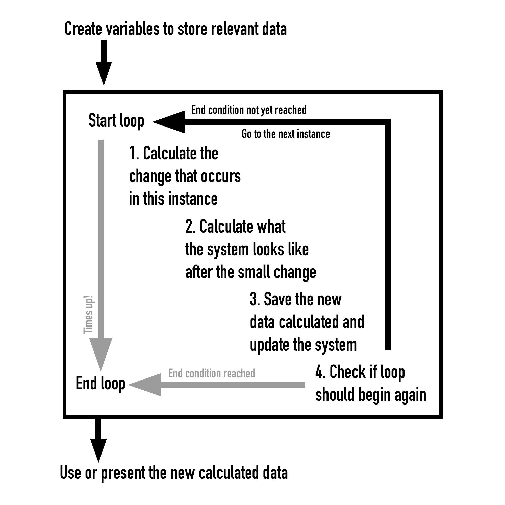
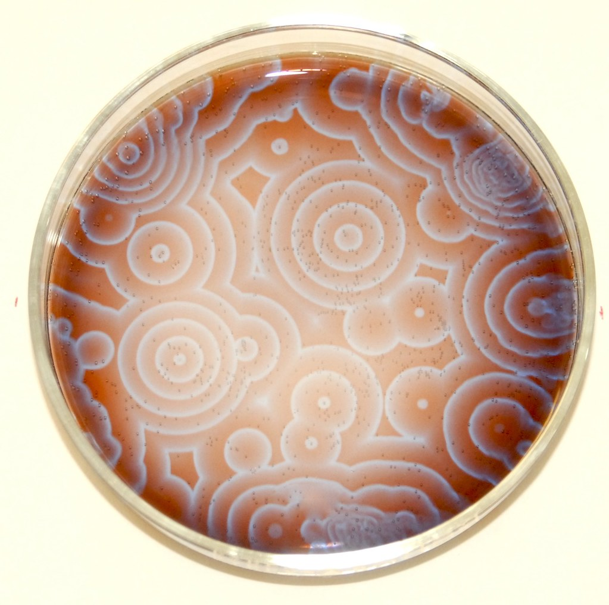
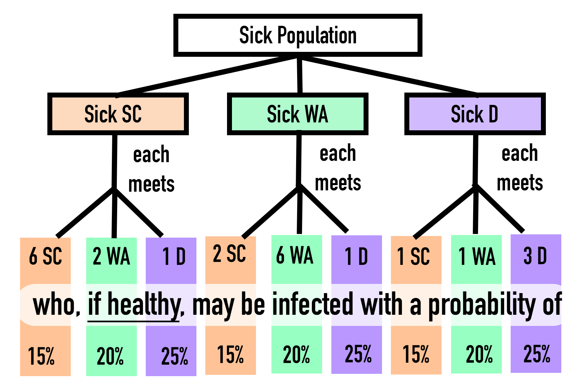
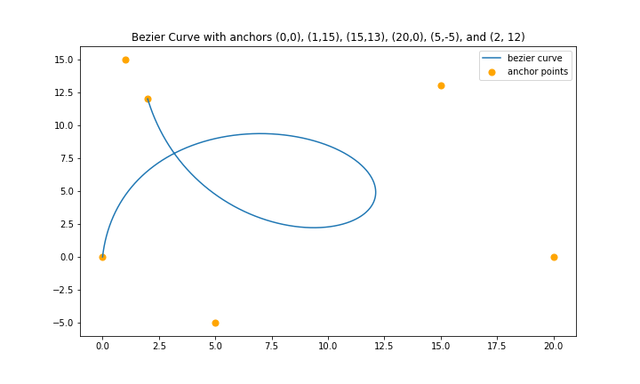

Theme 0: How do we model the Earth?
A Brief Revision of Python Requirements
1 | WELCOME BACK
Hello and welcome back to the new academic year. We have a lot in store for you this semester for SP3275, thus we would like to give you a quick python revision to prepare you for the activities up ahead. In weeks 2-6, you will need to simulate systems on earth using Python, and this revision is geared to help you with this task.
Disclaimer: This intro is here to help you, not restrict you. If you enjoy working in another way, or if you find this intro not comprehensive enough, feel free to do what you prefer. Additionally, if you have any suggestions on how to improve this guide, please let us know! Thank you :3
2 | HOW TO PYTHON?
2.1 HOW TO STORE DATA AND MAKE OBJECTS?
Before we can model interactions between objects, we first must be able to “create” these objects and store other information. We can do this by making variables. Python allows us to create variables using an equals sign “=”.
a = 3There are a few types of variable we can make, but for this module, we will be focused on integers, floats (numbers with decimal points), lists, numpy arrays, and strings (a bunch of characters/words).
a = 3 #creating an integer variable called "a" with value of 3
b = 3.0 #creating a float variable called "b" with value of 3.0
c = [a,b] #creating a list variable called "c" with the variables a and b in the list
d = "hi" #creating a string variable called "d" with the string of characters "hi"Numpy arrays are a bit more special, and are usually more convenient for performing math operations. We can easily create numpy arrays by importing the external numpy library, as if it were an external mod or DLC.
import numpy as np #importing the external library
e = [1,2,3,4,5] #creating a python list variable called "e"
f = np.array(e) #turning e into a numpy array and saving it as a variable called "f"
g = (f*3).tolist() #multiplying each element in f by 3, then converting the result into a python list and saving it as a variable called "g"Math operations on lists work on the list itself rather than values inside the list, thus for this syllabus, use numpy arrays instead when doing math. However, numpy arrays have some limitations, for example, all elements inside a numpy array must be of the same type (eg. all lists of length 3, or all floats).
For more information regarding variables, please refer to SP2273 notes online
2.2 HOW TO PERFORM “ACTIONS” IN PYTHON?
One of the simplest ways to model an interaction is by describing it using a mathematical operation. As shown in the previous example, we can perform math operations in python, using the following symbols: “+” for plus, “-” for minus, “/” for divide, “*” for multiply, and “**” for power. Unlike math in writing, python has limited intelligence and will require you to explicitly type out all the relevant math operations: a*b is “a” multiplied by “b”, however, ab is treated as a new variable “ab” instead.
Other math variables like pi and e can be obtained from the numpy external library (np.pi and np.exp() respectively). For example:
import numpy as np
Initial_Sheep = 100
Growth_Rate = 2*np.pi
Time = 30
Sheep_Now = Initial_Sheep*np.exp(Growth_Rate*Time)Notice that np.exp() works by taking whatever is in the brackets immediately after and making e to the power of that number. In this case, np.exp() works like a math function, eg. f(x) or g(y). Functions always end with a () after the function name, even if the function itself doesn’t require inputs. Python has many functions, and one of the more important ones for us is the print() function. The print() function makes prints out the variable for you to see in the output:
print("hello world")Besides pre-existing functions, you can make your own functions, if you find yourself doing the same thing over and over again and would like some personalised “shortcuts”:
def makingfunction(argument1,argument2): #creates the function with a name and expected inputs
#code that you wish to call can be written here. All variables made here are temporary, and disappears once the function "ends"
tempvariable = (argument1 + argument2)/(argument1 * argument2)
output = tempvariable**2
return output #ends the function, and can generate a function output to the "outside world"Besides just making coding more convenient, functions can also help your code be more readable, and can help you neatly segment your code for when you comb your code for errors. For more information about functions and function arguments, please refer to the relevant documentation online, or you can also refer to the SP2273 notes online for reference
2.3 HOW TO CRAFT PLANS OF “ACTIONS” IN PYTHON?
Besides using custom functions to plan out a series of actions, we can also use loops to call a series of actions repetitively. For SP3275, we are going to use the for loop and while loop. The for loop looks like this:
for temp in iterableobejct:
print(temp) #or really anything you want to do, you don't even have to use the variable!where you create a variable (named “temp” in this case), and you have an iterable object, like a list. The variable will first be equal to the first object of the iterable object, and perform all the code within the for loop. It will then go on to be equal to the next object in the iterable object, and perform everything in the for loop once more. And so on and on. This helps us to give repetitive commands without having to type everything out!
While loops on the other hand do not require an iterable object, however, they do need a run condition, otherwise the while loop will go on forever and won’t know to stop.
x = 0
while x != 3: #Run condition being that x is not equal to 3
x = x + 1The computer will always try and run the code within the while loop again and again before it proceeds to anything after the while loop. However, during each iteration, the computer will first check the status of the run condition. If the run condition is true, then the iteration is successfully run, and once completed the computer will attempt to repeat the loop again. However, if the run condition is false, then the iteration stops immediately, and we exit the while loop.
For more information about loops, please refer to the SP2273 notes online
While the computer loops for us, we might want certain additional commands to run only when certain conditions are met. The if-else clause is very helpful for these kinds of situations, but it only works on True/False conditions. Typically, we use a double equals sign “==”, or larger than “>” and smaller than “<” to describe such conditions.
codeword = ""
hint = [0,0,1,0,0,2,3]
for i in hint:
if i == 0: #if (condition) is met, the indented line will happen.
codeword = codeword + "ba-"
elif i == 1: #otherwise, if (alternate condition) is met, the indented line will happen.
codeword = codeword + "ba, "
elif i == 2: #there can be as many elifs as you like. The code will run in order of writing.
codeword = codeword + "na-"
else: #otherwise if no other conditions were met, the indented line will happen.
codeword = codeword + "na!"For more information about if-else statements, please refer to the SP2273 notes online
2.4 HOW TO SAVE AND SEARCH OUR RESULTS?
Now that we have a method to make variables and perform calculations, we want a convenient way to store data without manually creating a new variable for each new piece of data. One of the simpler methods is to simply add to a list with the method .append(). Methods are like functions that are unique to a specific type of variable (eg. lists), and are used by calling the method after a full stop after the variable.
import numpy as np
data_storage = []
for i in [1,2,3,4,5,6,7,8]:
new_data = np.exp(i) #calculating new data
data_storage.append(new_data) #saving new data into the data_storage listIf instead we want to replace pre-existing data inside a list, we need to find the position in the list we want to replace, and set that equal to the new value we want.
old_data = [3,3,0,3,3]
new_value = 3
old_data[2] = new_value #reminder that the index of 2 is the (2+1) positionNotice the bracket after old_data in the last line? This is to perform list splicing, where we interact with data at certain positions in a list. Numpy arrays also have a similar function, with minor syntax differences.
import numpy as np
#The same for python lists and numpy arrays
A = [1,2,3,4,5]
#A[0] == 1 #indexing from the front
#A[-1] == 5 #indexing from the back
#A[0:3] == [1,2,3] #indexing the [a,b) subset (ie. including index a up until and excluding index b)
#A[:2] == [1,2] #indexing the [0,c) subset (ie. start of the list up until and excluding index c)
#A[-3:] == [3,4,5] #indexing the [d,-1] subset (ie. including index d up until the end of the list)
#Lists within lists for python lists
B = [[1,2],[3,4],[5,[6,7]]]
#B[0][1] == 2 #B[0] returns the 1st index of B, then B[0][1] returns the 2nd index of B[0]
#B[2][1][0] == 6 #ie. ((B[2])[1])[0] == ([5,[6,7]][1])[0] == [6,7][0] == 6
#Arrays within arrays for numpy arrays
C = np.array([[1,2],[3,4],[5,6]])
#C[0,1] == 2
#Array masking for numpy arrays
D = np.array([1,2,3,4,5])
#(D > 3) == np.array([False, False, False, True, True])
#D[D > 3] == [4,5]Beyond just splicing data, there are many other methods to searching data within the list. For example, np.min() and np.max() returns the min and max of the values of the array respectively, whereas np.argmin() and np.argmax() returns the index of the min and max values of the array respectively.
For more information about list splicing, please refer to online python list manipulation, python list search, numpy array manipulation, and numpy array search guides.
2.5 HOW TO PRESENT OUR RESULTS?
Now that we have a way to perform calculations and to save our data, we want a nice graphical way to present the data. Fortunately, there are many graphical external libraries to make life easier. For simplicity, we will be using the matplotlib.pyplot package, but feel free to use others that you might prefer.
import numpy as np
import matplotlib.pyplot as plt
x_values = np.linspace(0,1,100)
y_values = np.sin(x_values)
#making a scatter plot
plt.scatter(x_values,y_values)
plt.show()
#making a line plot
plt.plot(x_values,y_values)
plt.show()For more information on how to make graphs, as well as how to fine-tune and beautify your graphs, please view the matplotlib documentation online or the SP2273 notes online
3 | PRACTICE MAKES PERFECT!
The best way to get proficient with coding is to do it yourself! The following optional exercises are to help you practice and will not be graded. Each exercise comes along with a possible solution for reference if you are truly stuck, but they are not model answers. At the end of the day, the best code is the one you know best!
3.1 Exercise 1
A Dripping Bucket
You have a 1 litre bucket that is full with water. There is a hole at the bottom of the bucket, and water drips out at 1 ml (1 drop) per second. Using python, make a “simulation” of the water draining from the bucket. Plot a scatterplot of the volume of water in the bucket for every second until the bucket is empty.

Make a variable for the 1 litre volume of water in the bucket
Make a variable for all the data you want to collect
Make a loop (a for loop is easier) that will last for the duration of the entire event. Let every iteration of the loop be one second of the simulation.
Within the loop, code out the change to the volume of the water in the bucket that happens within that second.
Save your data into the variable(s) in part (2) before you proceed
Once you have run through your loop and obtained all your data, plot the data you have obtained
import matplotlib.pyplot as plt
Bucket_Initial = 1000
Bucket_Data = [Bucket_Initial]
for i in range(1000):
Bucket_Change = 1
Bucket_Data.append(Bucket_Data[i]-Bucket_Change)
plt.scatter(np.linspace(0,len(Bucket_Data),len(Bucket_Data)),Bucket_Data)
plt.title("Bucket Volume against Time")
plt.ylabel("Bucket Volume / cm")
plt.xlabel("Time / s")
plt.show()3.2 Exercise 2
An Accelerating Car
A car begins at rest and starts to accelerate forwards. For the duration of an hour, it maintains a constant acceleration of 0.1 ms-2 (ie. its velocity or “speed” increases by 0.1 ms-1 every second). Using python, make a simulation of the car travelling and plot a lineplot of its displacement (distance travelled) against time. You are allowed to approximate changes in velocity and displacement as step-wise events in lieu of continuous events.
Example 2 is very similar to Example 1, except that the change that occurs every second has an additional layer. While the rate of water loss is constant throughout in Example 1, in Example 2 the velocity changes over time.
You are allowed to assume that within each second, the displacement, velocity, and acceleration are approximately constant. These parameters only change from second to second, in the “drop-like” manner of Example 1.
import numpy as np
import matplotlib.pyplot as plt
Car = [[0,0]]
for i in range(3600):
dV = 0.1
dS = Car[-1][1]+dV
Car.append([Car[-1][0]+dS, Car[-1][1]+dV])
Car = np.array(Car)
plt.scatter(np.linspace(0,len(Car),len(Car)),Car[:,0])
plt.title("Car Displacement against Time")
plt.ylabel("Car Displacement / m")
plt.xlabel("Time / s")
plt.show()3.3 Exercise 3
A Faulty Car
A car begins at rest and starts to accelerate forwards. For the duration of an hour, it tries maintains a constant acceleration of 0.1 ms-2. However, every second, there is a 10% chance that the car will not experience acceleration for that second. Using python, make a “simulation” of the car travelling and plot a lineplot of its displacement (distance travelled) against time. Additionally, plot a scatterplot of the displacement values during the seconds where the car was faulty (when acceleration did not occur).
Example 3 is very similar to Example 2, however, the acceleration is affected by random chance. Consider using np.random.random() or random.random() to help with simulating randomness. Please refer to SP2273 notes online for more information.
Reminder, Example 3 has an additional plotting task as well. The relevant information needs to be accessible.
import numpy as np
import matplotlib.pyplot as plt
Car = [[0,0]]
Faults = []
for i in range(3600):
if np.random.random() > 0.1:
dV = 0.1
else:
dV = 0
Faults.append(i)
dS = Car[-1][1]+dV
Car.append([Car[-1][0]+dS, Car[-1][1]+dV])
Car = np.array(Car)
plt.plot(np.linspace(0,len(Car),len(Car)),Car[:,0])
plt.title("Car Displacement against Time")
plt.ylabel("Car Displacement / m")
plt.xlabel("Time / s")
plt.show()
plt.scatter(np.linspace(1,len(Faults),len(Faults)),Car[Faults,0])
plt.title("Car Displacement against Faults")
plt.ylabel("Car Displacement / m")
plt.xlabel("Faults (Chronological)")
plt.show()3.4 Exercise 4
Matryoshka Dolls
Besides modelling events, sometimes we need to handle messy data. A common way people store complicated data is via lists of lists. For example:
Matrix = [[0,1,2],[3,6,9],[-5,-7,-13]]Using the basic python library, list manipulation, and the “Matrix” list given above, obtain:
The matrix diagonal (first element from first list, second element from second list, …), expressed as a list of integers.
The matrix transpose (a new matrix where the jth element of the ith row of the original matrix becomes the ith element of the jth row of the original matrix)
The sum of elements for each row and column
A good starting point would be to try extracting out single elements from the matrix. Then, consider finding a way to extract out all the desired single elements iteratively.
Matrix = [[0,1,2],[3,6,9],[-5,-7,-13]]
#Question 1
Diag = []
for i in range(len(Matrix)):
Diag.append(Matrix[i][i])
#Question 2
rows = len(Matrix)
columns = len(Matrix[0])
NewMat = []
for i in range(columns):
NewCol = []
for j in range(rows):
NewCol.append(Matrix[j][i])
NewMat.append(NewCol)
#Question 3
row_sums=[sum(i) for i in Matrix]
col_sums=[sum(j) for j in NewMat]3.5 Exercise 5
A Messy Image
In the following exercise, we will be doing exercise 4 but on a larger scale. Every image is essentially a nested array of numbers representing the colour and intensity of a pixel. Intensity for each colour ranges from 0 to 255, with 0 being no colour and 255 being the highest colour intensity. The structure of the nested array is shown below:
pixel = [red,green,blue]
row = [pixel,pixel,pixel,pixel,pixel]
image = [row,row,row,row,row]Using the image shown:

Present the original image but with all the blue intensities equal to 0. Do the same for the other colours.
Present the original image but with each alternate row and alternate column missing.
Present the original image but with each alternate diagonal slice turned to black instead.
Present the original image but with all pixels with any intensity higher than 253 coloured black instead.
Plot the distribution of intensity for each colour accross the whole image.
You can use plt.imshow() to present the array as an image. To open the image from file, you can use the plt.imread() function. As with the previous exercise, if you are encountering trouble, consider working out your code on a small subset first:
testcase = np.array([[[10,20,30],[50,100,150]],[[0,255,150],[255,255,255]]]) import matplotlib.pyplot as plt
import numpy as np
pic = plt.imread("/Users/xinguan/Belousov-Zhabotinsky.jpeg")
# Task 1
def nocolour(colour,pic):
temp = np.copy(pic)
state = False
if colour == "blue":
state = 2
elif colour == "green":
state = 1
elif colour == "red":
state = 0
temp[:,:,state] = 0
plt.title("No " + colour)
plt.imshow(temp)
plt.show()
nocolour("blue",pic)
nocolour("green",pic)
nocolour("red",pic)
# Task 2
nrows = len(pic)
rmask = np.linspace(0,nrows-1,nrows)
rcut = pic[rmask%2==0]
ncols = len(pic[0])
cmask = np.linspace(0,ncols-1,ncols)
ccut = rcut[:,cmask%2==0]
plt.imshow(ccut)
plt.show()
# Or alternatively,
plt.imshow(pic[::2,::2])
plt.show()
# Task 3
stripe = np.copy(pic)
for i in range(len(pic)):
for j in range(len(pic[0])):
if (i+j)%2 == 1:
stripe[i,j] = [0,0,0]
plt.imshow(stripe)
plt.show()
# Task 4
bmask = np.copy(pic)
for i in range(3):
bmask[bmask[:,:,i] > 253] = [0,0,0]
plt.imshow(bmask)
plt.show()
# Task 5
plt.hist(pic[:,:,0].flatten(), bins = 256, label="red", color="red", alpha = 0.2)
plt.hist(pic[:,:,1].flatten(), bins = 256, label="green", color="green", alpha = 0.2)
plt.hist(pic[:,:,2].flatten(), bins = 256, label="blue", color="blue", alpha = 0.2)
plt.legend()
plt.show()3.6 Exercise 6
A Series Of Events
One important skill to have in making simulations is to be able to handle complex situations. This exercise is an example of chopping a big problem into manageable small ones. We will be creating a simple model to estimate the progress of an epidemic in a population. In this exercise, we will specify the sub-tasks required, and how to merge many sub-tasks into one large final project. Please not that this is not the only way, nor even the best way to split up a large project. Feel free to approach the problem however you like.
Context
The population starts off with 1000 school children (SC), 4000 working adults (WA), and 1000 dependents (D). 1 SC, 1 WA, and 1 D start off as infected.
Everyday, each SC on average interacts with 6 other SC, 2 WA, and 1 D. Everyday, each WA on average interacts with 6 other WA, 2 SC, and 1 D. Everyday, each D on average interacts with 3 other D, 1 SC, and 1 WA. This level of interaction is fixed.
The probability of infection upon interaction is 15% for healthy SC, 20% for healthy WA, and 25% for healthy D. Assume that two or more sick individuals will never infect the same healthy person simultaneously. Assume that newly infected individuals can only begin infecting others the day after.
The probability of being quarantined for being infected is 10% per day. Quarantines only happen at the end of the day, and the quarantined people exit the simulation altogether (however, you should track the number of people quarantined).
The probability of dying from infection is 2% for sick SC, 3% for sick WA, and 10% for sick D. Deaths only happen at the end of the day, and the dead people exit the simulation altogether (however, you should track the number of deaths).
The probability of recovery from infection is 5% for sick SC, 2.5% for sick WA, and 0% for sick D. Recoveries only happen at the end of the day, and the recovered people rejoin the healthy pool of people (they gain no immunity).
The order of events are as such: Day Starts -> Interaction -> Infection -> Quarantine -> Death -> Recovery
Overall Task
Each simulation should last 1000 days. Track the population of the healthy, infected, quarantined, and dead population for each age group (SC, WA, or D). Run a total of 100 simulations and compare the different results. Present the results in a clear and meaningful way (up to your discretion).
Pre-simulation Preparation
Create variables to hold the following information. You might want to group some variables together into lists for ease of future access.
Total SC, Total WA, Total D
Sick SC, Sick WA, Sick D
Quarantined SC, Quarantined WA, Quarantined D
Dead SC, Dead WA, Dead D
Create variables to hold the following information. You might want to group some variables together into lists for ease of future access.
Number of encounters of each group type (SC, WA, and D) each sick individual of each group type (SC, WA, and D) has per day.
Probabilities for each group type (SC, WA, and D) for infection, quarantine, death, and recovery.
Create a function that takes in n number of independent trials and p probability that an event happens per trial, then outputs the a random sample of the total number of events that occurred within the n trials. (Hint: You might want to create such shortcuts for other complex operations as well!)
def stoc(n,p):
#enter your code here
result = #enter your code here
return resultSimulating Infection

Create a variable to hold the data for all the newly infected individuals of the day. This should account for all 3 possible categories of sick people.
Simulate the day of a sick SC.
The sick SC interacts with 6 other SC. Calculate the probability that another SC is healthy. Use an RNG to help determine how many of the 6 SC are healthy.
Upon interaction, the healthy SC have a 15% chance of being infected. Use an RNG to help determine how many of the healthy SC are infected. Save the data of newly infected SC.
Repeat (a to b) for WA and D as the interactees.
Repeat (1) for all the other sick SC.
Repeat (1-2) but for sick WA and sick D.
Update infection results.
End-of-Day Upkeep
Simulate the average end of day for sick SCs.
The sick SCs have a 10% chance of being quarantined. Use an RNG to help determine how many of the sick SC are quarantined. Save and update the data of newly quarantined SC.
The remaining sick SCs have a 2% chance of dying. Use an RNG to help determine how many of the sick SC dies. Save and update the data of newly dead SC.
The remaining sick SCs have a 5% chance of recovering. Use an RNG to help determine how many of the sick SC recovers. Save and update the data of remaining number of sick SCs.
Repeat (1) but for sick WA and D.
Multiverse Simulation
Repeat Subtasks (1-3) for 1000 days to make 1 simulation.
Repeat (1) for 100 simulations.
Plotting
Consider possible interesting information you can extract and present it in a graph. For example, you can present how the total number of quarantined people varies at the end of the simulation across all 100 simulations. This sub-task is much more open to interpretation. Investigate your data! Find interesting things about it and share. Perhaps select the first 10 simulations and look at how the simulations went for some inspiration on what is interesting to present.
At any point, if you find yourself typing the same code again and again, consider generalising it into a custom function to save yourself the trouble.
When it comes to troubleshooting your code, do consider using the print() function to investigate the variables you are working with. Even if you have a run error, all valid commands before the error will still execute first. Figuring out where the bug occurs will go a long way towards searching for the solution! To further help with this, try segmenting your code so you can test and check each small segment.
Simulations and models are simplified versions of reality made for ease of use. When starting such a coding project, choose important details to prioritise and insignificant details to forgo.
Consider using np.random.random() or random.random() to help with simulating randomness. Please refer to SP2273 notes online for more information.
import numpy as np
import matplotlib.pyplot as plt
def Simulation(Days=1000,T=[1000,4000,1000],S=[1,1,1],Q=[0,0,0],D=[0,0,0],Encounters=[[6,2,1],[2,6,1],[1,1,3]],Pinfect=[0.15,0.2,0.25],Pquar=[0.1,0.1,0.1],Pdie=[0.02,0.03,0.1],Precover=[0.05,0.025,0],Seed=0):
np.random.seed(Seed)
Total=T.copy()
Sick=S.copy()
Quarantined=Q.copy()
Dead=D.copy()
Data = [[Total.copy(),Sick.copy(),Quarantined.copy(),Dead.copy()]]
for a in range(Days):
#Infection Time
NewlySick = [0,0,0]
for i in range(3): #for each category of sick people
for j in range(Sick[i]): #for each sick person in a category
for k in range(3):
if Total[k] < 2:
Healthy_Encounters = 0
else:
Healthy_Encounters = np.sum(np.random.random(min([Encounters[i][k],Total[k]])) < ((Total[k]-Sick[k]-NewlySick[k])/(Total[k]-1)))
New_sick = np.sum(np.random.random(Healthy_Encounters) < Pinfect[k])
if (Total[k]-Sick[k]-NewlySick[k]-New_sick) < 0:
New_sick = Total[k]-Sick[k]-NewlySick[k]
NewlySick[k] = NewlySick[k] + New_sick
#Update Infection Results
for i in range(3):
Sick[i] = Sick[i] + NewlySick[i]
if Sick[i] > Total[i]:
Sick[i] = Total[i]
#End of Day Upkeep
for i in range(3):
Nquar = np.sum(np.random.random(Sick[i]) < Pquar[i])
Sick[i] = Sick[i] - Nquar
Total[i] = Total[i] - Nquar
Quarantined[i] = Quarantined[i] + Nquar
Ndie = np.sum(np.random.random(Sick[i]) < Pdie[i])
Sick[i] = Sick[i] - Ndie
Total[i] = Total[i] - Ndie
Dead[i] = Dead[i] + Ndie
Nrec = np.sum(np.random.random(Sick[i]) < Precover[i])
Sick[i] = Sick[i] - Nrec
#Record End-Of-Day Results
Data.append([Total.copy(),Sick.copy(),Quarantined.copy(),Dead.copy()])
if np.sum(Total) == 0:
return Data
elif np.sum(Sick) == 0:
return Data
return Data
DATA = []
for b in range(100):
print("Starting Simulation "+str(b+1))
NewRun=Simulation(Seed=b)
DATA.append(NewRun)
Final_Deaths = [np.sum(i[-1][3]) for i in DATA]
plt.plot(np.linspace(0,len(DATA),len(DATA)),Final_Deaths)
plt.show()1. Pre-simulation Preparation
# Part 1
Total = [1000,4000,1000] #SC,WA,D
Sick = [1,1,1] #SC,WA,D
Quarantined = [0,0,0] #SC,WA,D
Dead = [0,0,0] #SC,WA,D
# Part 2
Encounters = [[6,2,1],[2,6,1],[1,1,3]] #Average encounter per category for each category (SC,WA,D)
Pinfect = [0.15,0.2,0.25]
Pquar = [0.1,0.1,0.1]
Pdie = [0.02,0.03,0.1]
Precover = [0.05,0.025,0]
# Part 3
def stoc(n,p):
return np.sum(np.random.random(n) < p)2. Simulating Infection
#A Sick SC infecting other SCs
Encounters_SC = min([Encounters[0][0],Total[0]-1]) #ie. whichever is lower, the total number of SCs in the population or the expected number of SC encounters
if Total[0] < 2:
P_healthyencounter = 0
else:
P_healthyencounter = (Total[0]-Sick[0])/(Total[0]-1)
Encounters_SC_healthy = stoc(Encounters_SC, P_healthyencounter)
N_Infected_SC = stoc(Encounters_SC_healthy, Pinfect[0])
#A Sick SC Infecting All Groups
N_Infected = [0,0,0]
for i in range(3):
if Total[i] < 2:
P_healthyencounter = 0
else:
P_healthyencounter = (Total[i]-Sick[i])/(Total[i]-1)
Encounters_healthy = stoc(min([Encounters[0][i],Total[i]-1]), P_healthyencounter)
N_Infected[i] = N_Infected[i] + stoc(Encounters_healthy, Pinfect[i])
#All Sick SCs Infecting All Groups
N_Infected = [0,0,0]
for j in range(Sick[0]):
for i in range(3):
if Total[i] < 2:
P_healthyencounter = 0
else:
P_healthyencounter = (Total[i]-Sick[i])/(Total[i]-1)
Encounters_healthy = stoc(min([Encounters[0][i],Total[i]-1]), P_healthyencounter)
N_Infected[i] = N_Infected[i] + stoc(Encounters_healthy, Pinfect[i])
#All Sick Infecting All Groups
N_Infected = [0,0,0]
for k in range(3):
for j in range(Sick[k]):
for i in range(3):
if Total[i] < 2:
P_healthyencounter = 0
else:
P_healthyencounter = (Total[i]-Sick[i])/(Total[i]-1)
Encounters_healthy = stoc(min([Encounters[k][i],Total[i]-1]), P_healthyencounter)
N_Infected[i] = N_Infected[i] + stoc(Encounters_healthy, Pinfect[i])
#Updating Infection Results
for l in range(3):
Sick[l] = Sick[l] + N_Infected[l]
if Sick[l] > Total[l]:
Sick[l] = Total[l]3. End-of-Day Upkeep
for i in range(3):
#Quarantine
N_Quarantined = stoc(Sick[i], Pquar[i])
Sick[i] = Sick[i] - N_Quarantined
Total[i] = Total[i] - N_Quarantined
Quarantined[i] = Quarantined[i] + N_Quarantined
#Death
N_Dead = stoc(Sick[i], Pdie[i])
Sick[i] = Sick[i] - N_Dead
Total[i] = Total[i] - N_Dead
Dead[i] = Dead[i] + N_Dead
#Recovery
N_Recover = stoc(Sick[i], Precover[i])
Sick[i] = Sick[i] - N_Recover4. Multiverse Simulation
#To make 1 Simulation:
#Enter Subtask 1 Code here
#Enter Subtask 1 Code above
data = [[Total.copy(),Sick.copy(),Quarantined.copy(),Dead.copy()]]
for a in range(1000):
#Enter Subtask (2-3) Code here
#Enter Subtaks (2-3) Code above
data.append([Total.copy(),Sick.copy(),Quarantined.copy(),Dead.copy()])
#To make 100 Simulations:
DATA = []
for b in range(100):
#Enter 1 Simulation Code here
#Enter 1 Simulation Code above
DATA.append(data)5. Present Information into a Graph
#To obtain data for the first 10 simulations
status = ["Total Population", "Sick Population", "Quarantined Population", "Dead Population"]
names = ["School Children", "Working Adults", "Dependents", "All Groups"]
for i in range(10):
fig, ax = plt.subplots(nrows=2,ncols=2,figsize=(10,10))
fig.suptitle("Simulation "+str(i+1), y=0.93, fontsize=20)
for a in range(2):
for b in range(2):
ax[a,b].set_title(names[a*2+b])
if (a*2+b) != 3:
for c in range(4):
ax[a,b].plot(np.linspace(0,len(DATA[i]),len(DATA[i])),[j[c][a*2+b] for j in DATA[i]],label=status[c])
elif (a*2+b) == 3:
for c in range(4):
ax[a,b].plot(np.linspace(0,len(DATA[i]),len(DATA[i])),[sum(j[c]) for j in DATA[i]],label=status[c])
ax[a,b].legend()
plt.show()Now that you can see how the first 10 simulations go, you can find something to investigate. You could investigate how randomness affects run-to-run variability, in terms of runtime, or peak infection rate, or final death rate, etc. The (simulated) world is your oyster!
3.7 Exercise 7
Drawing A Plan
In example 6, we have exercised the breaking up of a big project into multiple small projects to work on. Now, plan out the breaking down of this big project yourself: Create a function that can make a Bezier curve of any power, using iterative linear interpolations.
To understand Bezier curves, we must first understand linear interpolations, or lerp for short. In our context, a lerp occurs between two anchor points and forms a straight line between them, made of n evenly spaced points. We can assign all points on the line a unique t value, ranging between 0 and 1, such that a t-value of 0 will be equal to the first anchor point, and a t-value of 1 equals the second anchor point. A lerp is also a power 1 (linear) Bezier curve.
Subsequent powers of Bezier curves require iterative lerps. For a power 2 (quadratic) Bezier curve, we require 3 anchor points. Next, perform a lerp between each neighbouring point (anchor point 1 with anchor point 2, then anchor point 2 with anchor point 3). This creates two lines (line_1 and line_2). Then, for each point on line_1 and line_2 with the same t value, we can perform another lerp (line_final). Then, we can find the point on line_final with the same t value. That point will be the point on the quadratic bezier curve with the same t-value. Repeat this procedure for all the different possible t values and the final quadratic bezier curve will be formed.
In a similar vein, a power 3 (cubic) Bezier curve requires 4 points. Make a lerp between points 1 and 2, 2 and 3, and 3 and 4, called line_1, line_2, and line_3 respectively. The coordinates on the final cubic Bezier curve with a certain t value is equal to the point with the same t value on the quadratic Bezier curve made from the points with the same t value in line_1, line_2, and line_3.
As you can guess, higher powers of Bezier curves are essentially made from strategic points chosen from many lower power Bezier curves. Consider referring to this exposé on Bezier curves for more clarity on what a Bezier curve is. You are advised to intepret this problem as coding out De Casteljau’s algorithm from scratch (simple numpy and matplotlib.pyplot functions are allowed).

import numpy as np
import matplotlib.pyplot as plt
def bezier(p,l,graph=True):
'''
This is a slow, iterative function to make Bezier curves of any power.
The function bezier(p,l,graph=True) returns [list_of_x_values,list_of_y_values] as output
p = the list of anchor points
l = the number of points that make up the final Bezier Curve (the "resolution")
graph = A Boolean which performs a simple plt.plot(x,y) for the final curve. Consider setting graph=False and performing your own graphing for more intricate plots.
'''
eq = []
for a in range(len(p)):
if a == 0:
for i in range(len(p)-1):
x = np.linspace(p[i][0],p[i+1][0],l)
y = np.linspace(p[i][1],p[i+1][1],l)
eq.append([x,y])
elif a < len(p)-1:
eq2s = []
for i in range(len(p)-(a+1)):
xn = []
yn = []
for j in range(l):
xn.append((eq[i+1][0][j]-eq[i][0][j])/l*j+eq[i][0][j])
yn.append((eq[i+1][1][j]-eq[i][1][j])/l*j+eq[i][1][j])
eq2s.append([xn,yn])
eq = eq2s
elif a == len(p)-1:
if graph == True:
plt.plot(eq[0][0],eq[0][1])
return [eq[0][0],eq[0][1]]